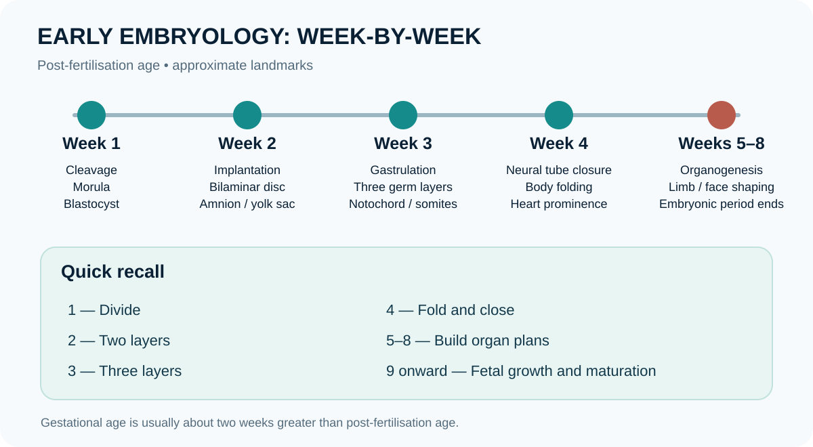

Fetal period, placenta and fetal circulation
Lesson overview
The fetal period begins in the ninth post-fertilisation week and is characterised mainly by growth and maturation. The placenta is a fetomaternal organ: fetal chorionic tissues and maternal decidua cooperate in exchange of gases, nutrients and waste and in endocrine signalling. Maternal and fetal blood normally remain in separate circulations. Fetal circulation uses the umbilical vein, ductus venosus, foramen ovale, ductus arteriosus and umbilical arteries to direct oxygen-rich blood and bypass the non-ventilated lungs. At birth, lung expansion and changes in vascular resistance initiate major circulatory transitions.

Learning objectives
- Distinguish embryonic development from fetal growth.
- Describe the placenta’s exchange and endocrine roles.
- Trace the major fetal circulatory shunts.
High-yield points
- Umbilical vein carries relatively oxygen-rich blood toward the fetus; two umbilical arteries return blood toward the placenta.
- Ductus venosus partly bypasses the liver; foramen ovale shunts between atria; ductus arteriosus connects pulmonary trunk to aorta.
- After birth, pressure and oxygen changes promote functional closure of shunts.
- Placental transfer depends on molecule properties, transport mechanisms and placental function.
Memory aid / mnemonic
D-F-D: Ductus venosus (liver bypass), Foramen ovale (atria), Ductus arteriosus (pulmonary artery to aorta). Umbilical vein goes to fetus; arteries go to placenta.
Study tip: hide this section, explain the concept aloud, then check whether you remembered the sequence and its rationale.
Clinical connection
Placental disorders and fetal growth restriction require obstetric assessment. Developmental diagrams do not predict individual outcomes.
Fetal circulation: follow the three shunts
The ductus venosus directs a portion of oxygenated umbilical venous blood past much of the hepatic sinusoids toward the inferior vena cava. The foramen ovale permits preferential right-to-left flow between atria in fetal life, helping direct relatively oxygen-rich blood toward the left heart and ascending aorta. The ductus arteriosus connects the pulmonary trunk to the descending aorta, bypassing the high-resistance fetal lungs. At birth, lung expansion lowers pulmonary vascular resistance and cord clamping removes the low-resistance placental circulation; pressure and oxygen changes promote functional closure of these shunts, followed by anatomical remodelling over time.
Check your understanding
- Which shunt carries blood from the pulmonary trunk toward the aorta?
Answer
The ductus arteriosus.
- What major circulatory change follows lung expansion at birth?
Answer
Pulmonary vascular resistance falls and pulmonary blood flow rises, increasing pulmonary venous return to the left atrium and helping close the foramen ovale functionally.
- Why is placental circulation important for fetal gas exchange?
Answer
The placenta is the site of maternal–fetal exchange; fetal lungs are not the primary gas-exchange organ before birth.
Further reading
NCBI Bookshelf — open embryology and fetal circulation chapters; confirm gestational timing against the dating convention used by each source.
Fetal period: growth, maturation and placental exchange
After the embryonic period, growth and functional maturation become prominent. The placenta is not merely a passive attachment: it provides an exchange interface, endocrine function and immunological interaction between maternal and fetal systems. Maternal and fetal blood normally remain in separate circulations, with exchange occurring across placental tissues.
Placental functions
- Gas exchange: oxygen moves from maternal to fetal blood and carbon dioxide moves in the opposite direction down their effective gradients.
- Nutrient transfer: glucose, amino acids, fatty acids, vitamins, minerals and water cross by mechanisms that vary by substance.
- Waste transfer: fetal metabolic products, including carbon dioxide and urea, pass to the maternal circulation for elimination.
- Endocrine activity: placental hormones help maintain pregnancy and adapt maternal physiology to support fetal growth.
- Barrier and immune roles: the placenta restricts many substances but is not an absolute barrier; some drugs, pathogens and antibodies can cross.
Fetal circulation: three key shunts
The ductus venosus allows a portion of umbilical venous blood to bypass much of the hepatic sinusoids; the foramen ovale directs relatively oxygenated blood from the right atrium toward the left atrium; and the ductus arteriosus connects the pulmonary trunk to the aorta, allowing most right ventricular output to bypass the high-resistance fetal lungs. The umbilical arteries carry blood from fetus to placenta, while the umbilical vein carries blood from placenta to fetus.
Transition at birth
After the first breaths, pulmonary vascular resistance falls and pulmonary blood flow rises. Clamping the umbilical cord removes the low-resistance placental circulation and changes systemic vascular resistance. These shifts promote functional closure of fetal shunts, but anatomical closure occurs over different time courses and may not be immediate.
Clinical correlation
Placental insufficiency, abnormal placental attachment, maternal disease and fetal conditions can affect growth or exchange. Ultrasound, Doppler studies and clinical assessment provide different information; no single image or measurement should be interpreted without gestational age, technique and clinical context.
Further reading
NCBI Bookshelf — search for placental physiology, fetal circulation and fetal development.